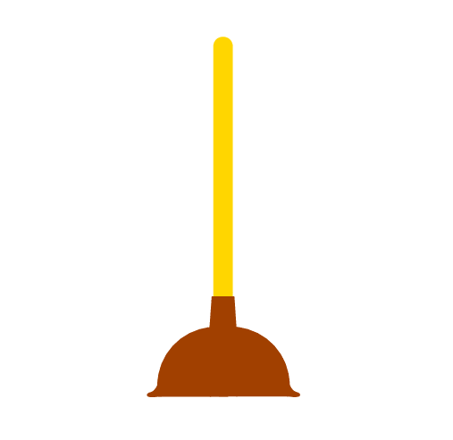
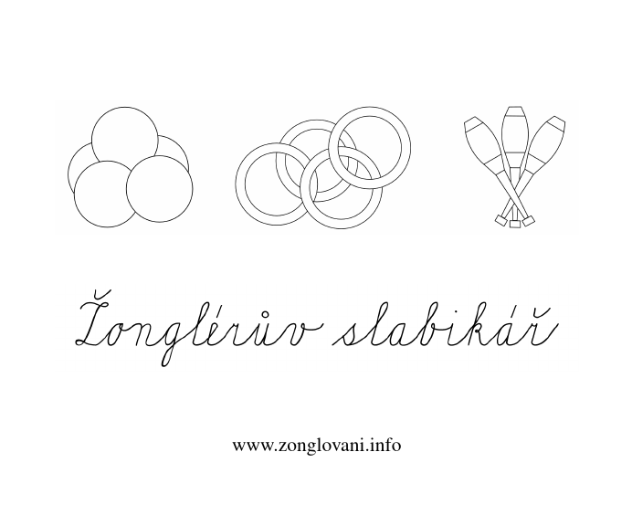

Jste zde: Žonglování » Informace o žonglování
Další informace o žonglování
Základní pojmy
 Základní pojmy v žonglování.
Základní pojmy v žonglování.
Často kladené otázky
Otázky, na které se lidé často ptají v souvislosti s žonglováním.
Žonglérské náčiní
 Žonglovat můžeš se spoustou věcí. Od míčků, přes kužely, diabolo až k záchodovým zvonům.
Druhy žonglování
 Žonglovat můžeš mnoha způsoby.
Žonglovat můžeš mnoha způsoby.
Cirkusové disciplíny
Dovednosti, které na první pohled nemusí s žonglováním souviset.
Literatura
 Knížky o žonglování. Některé jsou dostupné zdarma na internetu.
Knížky o žonglování. Některé jsou dostupné zdarma na internetu.
Siteswap
Noty pro žonglování. Osvětlí ti zápis žonglování čísly.
Simulátory žonglování
Počítačové programy, které kreslí animace žonglování.
Anglicko-český žonglérský slovníček
Několik slovíček, které se často vyskytují v anglicky psaných textech o žonglování.
Trénink
Chůdy
Návod na výrobu chůd a žonglování na chůdách.
Animace žonglování
Žonglování na síti
Odkazy na stránky věnované žonglování.
Mýty a omyly
Soubory ke stažení
 Žonglérův slabikář jako elektronická kniha a pro použití na počítačích bez internetu.
Žonglérův slabikář v mobilu
 Žonglérův slabikář je přizpůsobený prohlížení na mobilních telefonech.
Žonglérův slabikář je přizpůsobený prohlížení na mobilních telefonech.
Proč a jak vznikl žonglérův slabikář
Trocha historie.